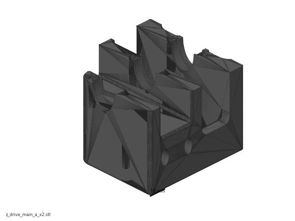
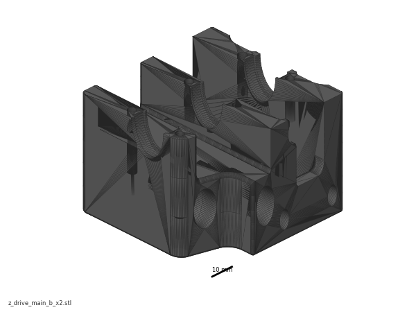
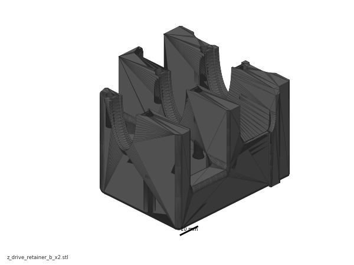
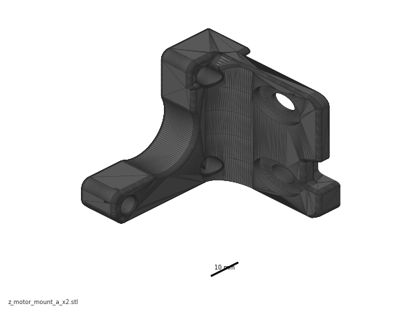
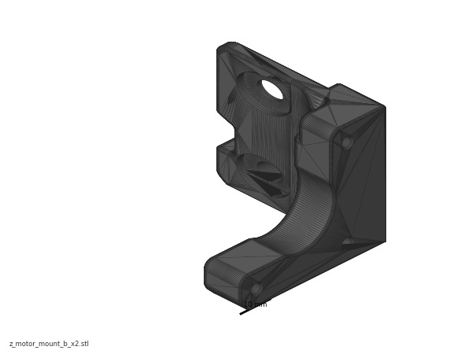
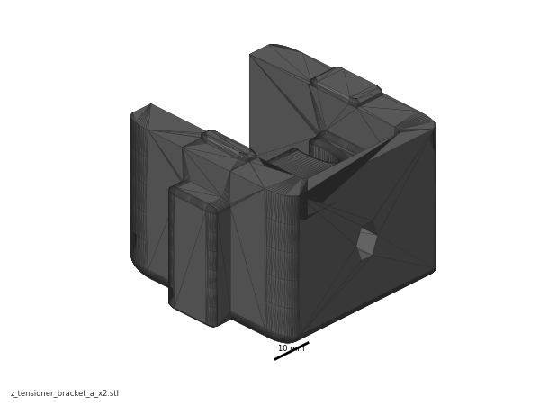
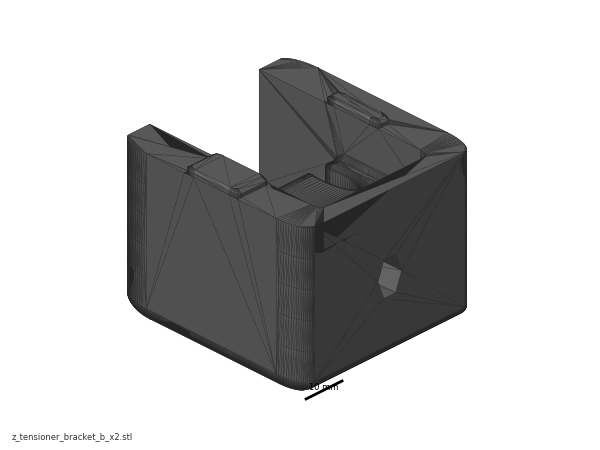
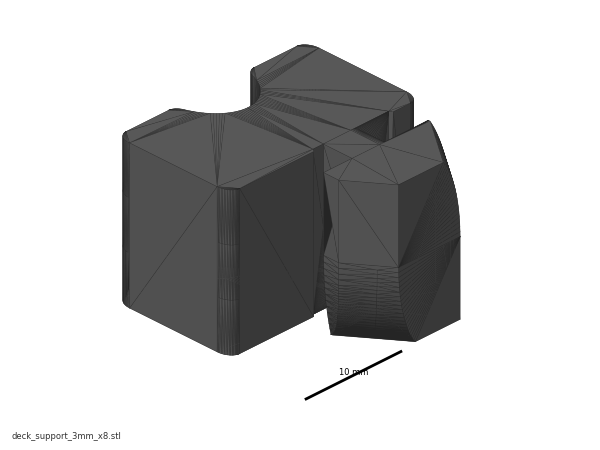

Before you start Chapter 02¶
Before you start · Chapter 02 — Z drives, Z idlers, Z rails, deck panel
Builds the four Z drive units, the four Z idlers, the four Z linear rails and the deck panel. When this chapter closes, the frame has a floor, feet, and every part of the Z motion system except the belts and the Z joints — the gantry has somewhere to hang from.
What you're building in this chapter: the machinery that raises and lowers the gantry, one corner at a time. A Z drive is the gearbox in a bottom corner: a printed housing holding three bearings and a shaft, with a big 80-tooth pulley the motor drives through a short closed belt and a 20-tooth pulley the long Z belt runs over — 80:16 of reduction, which is what makes Z fine enough to print with. The housing is two printed halves: a shallow retainer tray the shaft and its bearings drop into, and the deeper main body that closes over them on six long screws and carries the two M5×40 that bolt the drive to the frame. An orange baseplate bolts across the drive's foot face and holds the nut the rubber foot screws into, and an orange cam tensioner pushes the motor along its extrusion to pull the short belt tight. Directly above each drive, at the top corner, a Z idler carries a free-spinning pulley that turns the long belt back down again; its orange slider is the adjuster you tension that belt with in Ch 06 (final tension is set in Ch 14). Between them run the four Z linear rails on the vertical extrusions, the tracks the gantry's corners actually ride on. Last comes the deck panel, the acrylic floor that divides the electronics bay underneath from the print chamber above — it goes in now because once the gantry and the wiring are in, it cannot be lifted out again. Four corners, all identical in function, built from mirrored _a and _b printed parts — diagonal corners share a hand (the map is at Step 02.02).
Time: 4.25–6.25 h hands-on, first build (survey §7.2, less the ~45 min of rail cleaning and greasing, which is done once for all seven rails in Ch 00 Steps 00.18–00.21).
Sessions: 11 × ~30 min — the Pause: lines below break the chapter into 11 segments; every minute figure is a first-build estimate.
Prerequisites:
- Chapter 01 complete: frame assembled, squared, bed extrusions positioned 65 mm each side of the printer centreline (130 mm clear gap between their inner faces, 150 mm centre-to-centre) per Ch 01 Step 01.19, and the squareness re-checked after the final torque pass.
- Print batch B00 (Calibration & jigs) —
MGN9_rail_guide_x2,pulley_jig. - Print batch B01 (Z drive assemblies) — drive bodies, retainers, motor mounts, Z-tensioner brackets, deck supports.
- Print batch B02 (Accent parts, orange) plates P1 and P3 — the five
[a]_parts below. - Steps 02.27–02.28 (16T pulleys, motors onto their mounts) need only B01-P2 and the Motor Kit — do them while B01-P1 is still printing if you like, and label the motor cables then.
- Chapter 00 complete: all seven rails cleaned, flip-and-packed with grease, wiped and labelled (Steps 00.18–00.21). The four marked Z0–Z3 are used here.
- Kit boxes open: Motion, Linear Rail Kit, Motor Kit, the M3/M5 fastener bags.
Tools
- Hex drivers 1.5 / 2 / 2.5 / 3 / 4 mm — good quality, not ball-end for set screws (p.32).
- Temperature-controlled soldering iron + the LDO brass M3 heat-set tip.
- Digital caliper (deck-panel thickness gate; 33 mm and 10.7 mm pulley dimensions).
- Printed jigs:
MGN9_rail_guide_x2×2,pulley_jig×1. - Masking tape (carriage retention, rail hole marking, the FRONT label) and a marker. The 3 mm hex key doubles as the rail-gap feeler (Step 02.06).
Consumables: Loctite 243 for any set screw that did not arrive with threadlocker pre-applied. (IPA, grease, soak tray, syringe and cloth were the Ch 00 rail-prep kit — nothing here needs them unless a rail was missed.)
Printed parts — all ASA. Black = main colour, Orange = accent ([a]_ prefix).
Parts arrive in the bins named below (see the bin map in print/README.md#bins); check the bin label's list before you start.
| Looks like | STL (Voron-2 STLs/, branch Voron2.4) |
Bin | Qty | Colour |
|---|---|---|---|---|
 |
Z_Drive/z_drive_main_a_x2.stl |
02-Z0 · 02-Z2 | 2 | Black |
 |
Z_Drive/z_drive_main_b_x2.stl |
02-Z1 · 02-Z3 | 2 | Black |
 |
Z_Drive/z_drive_retainer_a_x2.stl |
02-Z0 · 02-Z2 | 2 | Black |
 |
Z_Drive/z_drive_retainer_b_x2.stl |
02-Z1 · 02-Z3 | 2 | Black |
 |
Z_Drive/z_motor_mount_a_x2.stl |
02-Z0 · 02-Z2 | 2 | Black |
 |
Z_Drive/z_motor_mount_b_x2.stl |
02-Z1 · 02-Z3 | 2 | Black |
 |
Z_Drive/[a]_z_drive_baseplate_a_x2.stl |
02-Z0 · 02-Z2 | 2 | Orange |
 |
Z_Drive/[a]_z_drive_baseplate_b_x2.stl |
02-Z1 · 02-Z3 | 2 | Orange |
 |
Z_Drive/[a]_belt_tensioner_a_x2.stl |
02-Z0 · 02-Z2 | 2 | Orange |
 |
Z_Drive/[a]_belt_tensioner_b_x2.stl |
02-Z1 · 02-Z3 | 2 | Orange |
 |
Z_Idlers/z_tensioner_bracket_a_x2.stl |
02-Z0 · 02-Z2 | 2 | Black |
 |
Z_Idlers/z_tensioner_bracket_b_x2.stl |
02-Z1 · 02-Z3 | 2 | Black |
 |
Z_Idlers/[a]_z_tensioner_9mm_x4.stl |
02-Z0 · 02-Z1 · 02-Z2 · 02-Z3 | 4 | Orange |
 |
Panel_Mounting/deck_support_3mm_x8.stl |
02-deck | 8 | Black — default (Rev D 350 BOM), see Step 02.12 |
| no render — same clip, slotted for a 4 mm panel | Panel_Mounting/deck_support_4mm_x8.stl |
— | 8 | Black — fallback if the panel measures 4 mm |
 |
Tools/MGN9_rail_guide_x2.stl (jig, not consumed) |
00-jigs | 2 | Black |
 |
Tools/pulley_jig.stl (jig, not consumed) |
00-jigs | 1 | Black |
 |
LDO STLs/z_rail_stop_x4.stl (optional) |
06-Z-joints | 4 | Black — batch B05, which prints after this chapter in the timeline |
{kind=link}
{kind=link}
{kind=link}
{kind=link}
{kind=link}
{kind=link}
{kind=link}
{kind=link}
The _xN suffix is the quantity you need, not the number of copies in the file — each STL contains one part. _a and _b are mirrored: two drives use the a set, two use the b set.
Hardware — chapter totals.
| Fastener / part | Qty |
|---|---|
| M3×8 SHCS | 24 (drives) + 36 (Z rails — 9 per rail, Step 02.06) |
| M3×16 SHCS | 4 |
| M3×40 SHCS | 24 |
| M3 hexnut | 4 |
| M3 roll-in T-nut, 2020 | 36 (one per Z-rail screw) |
| M3×5×4 brass heat-set insert | 36 (Step 02.04) + up to 7 on the practice coupon (Step 02.03) |
| M5×10 BHCS | 8 (drives) |
| M5×16 BHCS | 4 |
| M5×30 BHCS | 12 (idlers: 2 mounting + 1 axle each) |
| M5×40 SHCS | 8 |
| M5 hexnut | 4 |
| M5 roll-in T-nut, 2020 | 28 (16 drives + 8 idlers + 4 deck) |
| M5 precision spacer, 1 mm (kit substitute for "M5 Shim") | 16 |
| M4×4 set screw, pre-applied threadlocker | 24 (2 each on 4× 20T, 4× 80T, 4× 16T) |
| 625-2RS bearing | 12 |
| GT2 80T pulley, 5 mm ID | 4 |
| GT2 20T 9 mm pulley, 5 mm ID | 4 |
| GT2 16T pulley, 5 mm ID 6 mm W | 4 |
| GT2 20T 9 mm idler, 5 mm ID | 4 |
| 5×60 mm shaft | 4 |
| Gates 2GT closed loop, 6 mm × 188 mm | 4 |
NEMA17 Z motor, LDO-42STH48-2004AC(VRN) |
4 |
MGN9H 400 mm rail, LDO-SLR9H-400Z0 |
4 |
| Rubber foot, 38×19 mm | 4 |
| Deck panel, acrylic black 469×469 | 1 |
Quantities cross-checked against the LDO Rev D 350 BOM (350_BOM/Rev_D); the LDO kit ships 6× MGN9H-400 and 1× MGN12H-400 — four of the MGN9s are yours here, the other two are the gantry Y rails in Chapter 05.
Read first
- The rails were cleaned and greased in Ch 00, not here. Flip-and-pack needs access to the back of the rail, which you lose the moment it is bolted to an extrusion — so if any of Z0–Z3 was missed, fix it before Step 02.06, not after (rail grease guide; survey §4.4 #5, §5.2 W9).
- The Z motors are the only place in the whole printer that uses 16T pulleys. They look almost identical to the 20T. Get them off the bench when this chapter is done (p.38; survey §4.4 #7).
- Every set screw gets threadlocker and must land on the flat/D-cut of the shaft. Loose set screws are the single most reported failure on this machine (p.32; §5.2 W12).
- Two corners take
_aparts, two take_b, and diagonal corners share a hand —_aat Z0 (front-left) and Z2 (rear-right),_bat Z1 (rear-left) and Z3 (front-right); map at Step 02.02, dry-fit at Step 02.29. A wrong-hand drive bolts on fine and is only found in Ch 06 when the Z belt goes on and the 20T is not under its idler. - Heat-set inserts go into the drive parts before the drive is assembled. A missed insert means taking a finished drive back apart (§4.4 #4, §5.2 W3).
- The deck panel and its supports go in now, at p.28–30 — not later with the panels. Retro-fitting the deck means pulling the frame apart (LDO note p.29–30; §5.2 W4).
- Nothing in this chapter touches a probe or an endstop. The Rev D+ nozzle probe and the Omron inductive probe belong to Chapters 08–09; leave both bagged.
Sources for this chapter:
- Voron 2.4r2 assembly manual (pinned
de7e89d) pages 22–51 — Z rails, deck panel, drive assemblies, motor mounts, corner installs, Z idlers - LDO Build Notes (Rev D) — deck supports at p.29–30, the second-hole rail rule, precision spacers, tight T-nuts
- LDO 350 Rev D BOM — quantities, motor and rail part numbers, the 3 mm deck panel line
- LDO rail grease guide — the flip-and-pack method the four Z rails were prepped with in Ch 00
- LDO heat-set insert tool guide — the 36-insert pass
- LDO wiring guide § Connecting Steppers — Z0–Z3 →
STEPPER-0…STEPPER-3 - LDO wiring guide § Installing the DIN Rails and Wire Ducts — why the four deck bolts wait for Ch 09
- LDO Klipper config
leviathan-printer-rev-d-sbv2.cfg—gear_ratio: 80:16,rotation_distance: 40 - LDO printed parts guide (Rev D) — the optional
z_rail_stop_x4 - Voron-2
STLs/Z_Drive, Voron-2STLs/Z_Idlers, Voron-2STLs/Panel_Mounting, Voron-2STLs/Tools - survey §4.3, §4.4, §5.2 · print plan batches B00/B01/B02
Video coverage (Steve Builds, pre-release LDO kit — differs from Rev D+): Part 1 @3:08:34 (+4m), Part 1 @3:20:00 (+9m), Part 1 @3:28:20 (+7m), Part 1 @3:34:50 (+9m), Part 2 @0:55:00 (+7m), Part 2 @1:18:20 (+14m), Part 2 @1:36:40 (+8m)